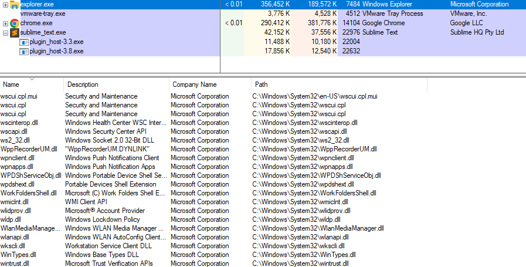
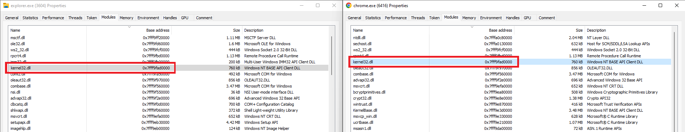
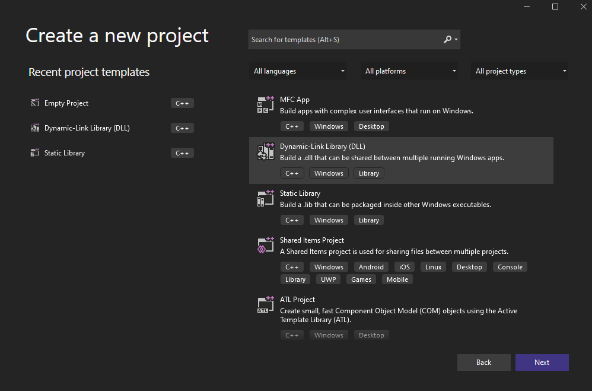
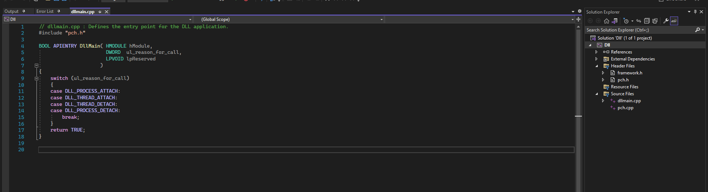
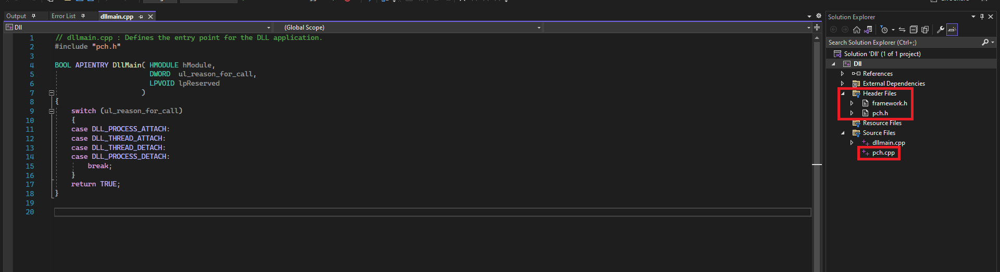
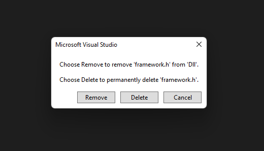
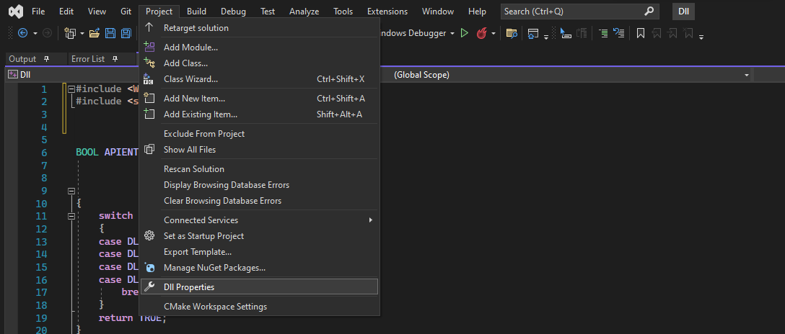
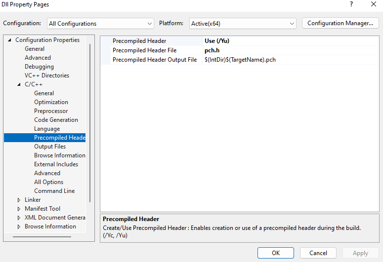
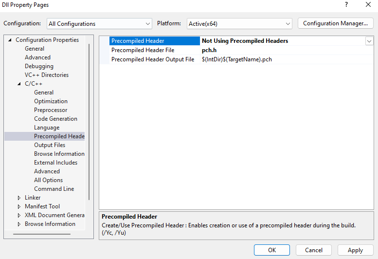

Introduction
Both .exe and .dll file types are considered portable executable formats but there are differences between the two. This module explains the difference between the two file types.
What is a DLL?
DLLs are shared libraries of executable functions or data that can be used by multiple applications simultaneously. They are used to export functions to be used by a process. Unlike EXE files, DLL files cannot execute code on their own. Instead, DLL libraries need to be invoked by other programs to execute the code. As previously mentioned, the CreateFileW is exported from kernel32.dll, therefore if a process wants to call that function it would first need to load kernel32.dll into its address space.
Some DLLs are automatically loaded into every process by default since these DLLs export functions that are necessary for the process to execute properly. A few examples of these DLLs are ntdll.dll, kernel32.dll and kernelbase.dll. The image below shows several DLLs that are currently loaded by the explorer.exe process.

System-Wide DLL Base Address
The Windows OS uses a system-wide DLL base address to load some DLLs at the same base address in the virtual address space of all processes on a given machine to optimize memory usage and improve system performance. The following image shows kernel32.dll being loaded at the same address (0x7fff9fad0000) among multiple running processes.

Why Use DLLs?
There are several reasons why DLLs are very often used in Windows:
DLL Entry Point
DLLs can optionally specify an entry point function that executes code when a certain task occurs such as when a process loads the DLL library. There are 4 possibilities for the entry point being called:
DLL_PROCESS_ATTACHED - A process is loading the DLL.DLL_THREAD_ATTACHED - A process is creating a new thread.DLL_THREAD_DETACH - A thread exits normally.DLL_PROCESS_DETACH - A process unloads the DLL.Sample DLL Code
The code below shows a typical DLL code structure.
BOOL APIENTRY DllMain(
HANDLE hModule, // Handle to DLL module
DWORD ul_reason_for_call, // Reason for calling function
LPVOID lpReserved // Reserved
) {
switch (ul_reason_for_call) {
case DLL_PROCESS_ATTACHED: // A process is loading the DLL.
// Do something here
break;
case DLL_THREAD_ATTACHED: // A process is creating a new thread.
// Do something here
break;
case DLL_THREAD_DETACH: // A thread exits normally.
// Do something here
break;
case DLL_PROCESS_DETACH: // A process unloads the DLL.
// Do something here
break;
}
return TRUE;
}Exporting a Function
DLLs can export functions that can then be used by the calling application or process. To export a function it needs to be defined using the keywords extern and __declspec(dllexport). An example exported function HelloWorld is shown below.
////// sampleDLL.dll //////
extern __declspec(dllexport) void HelloWorld(){
// Function code here
}Dynamic Linking
It's possible to use the LoadLibrary, GetModuleHandle and GetProcAddress WinAPIs to import a function from a DLL. This is referred to as dynamic linking. This is a method of loading and linking code (DLLs) at runtime rather than linking them at compile time using the linker and import address table.
There are several advantages of using dynamic linking, these are documented by Microsoft here.
This section walks through the steps of loading a DLL, retrieving the DLL's handle, retrieving the exported function's address and then invoking the function.
Loading a DLL
Calling a function such as MessageBoxA in an application will force the Windows OS to load the DLL exporting the MessageBoxA function into the calling process's memory address space, which in this case is user32.dll. Loading user32.dll was done automatically by the OS when the process started and not by the code.
However, in some cases such as the HelloWorld function in sampleDLL.dll, the DLL may not be loaded into memory. For the application to call the HelloWorld function, it first needs to retrieve the DLL's handle that is exporting the function. If the application doesn't have sampleDLL.dll loaded into memory, it would require the usage of the LoadLibrary WinAPI, as shown below.
HMODULE hModule = LoadLibraryA("sampleDLL.dll"); // hModule now contain sampleDLL.dll's handleRetrieving a DLL's Handle
If sampleDLL.dll is already loaded into the application's memory, one can retrieve its handle via the GetModuleHandle WinAPI function without leveraging the LoadLibrary function.
HMODULE hModule = GetModuleHandleA("sampleDLL.dll");Retrieving a Function's Address
Once the DLL is loaded into memory and the handle is retrieved, the next step is to retrieve the function's address. This is done using the GetProcAddress WinAPI which takes the handle of the DLL that exports the function and the function name.
PVOID pHelloWorld = GetProcAddress(hModule, "HelloWorld");Invoking The Function
Once HelloWorld's address is saved into the pHelloWorld variable, the next step is to perform a type-cast on this address to HelloWorld's function pointer. This function pointer is required in order to invoke the function.
// Constructing a new data type that represents HelloWorld's function pointer
typedef void (WINAPI* HelloWorldFunctionPointer)();
void call(){
HMODULE hModule = LoadLibraryA("sampleDLL.dll");
PVOID pHelloWorld = GetProcAddress(hModule, "HelloWorld");
// Type-casting the 'pHelloWorld' variable to be of type 'HelloWorldFunctionPointer'
HelloWorldFunctionPointer HelloWorld = (HelloWorldFunctionPointer)pHelloWorld;
HelloWorld(); // Calling the 'HelloWorld' function via its function pointer
}Dynamic Linking Example
The code below demonstrates another simple example of dynamic linking where MessageBoxA is called. The code assumes that user32.dll, the DLL that exports that function, isn't loaded into memory. Recall that if a DLL isn't loaded into memory the usage of LoadLibrary is required to load that DLL into the process's address space.
typedef int (WINAPI* MessageBoxAFunctionPointer)( // Constructing a new data type, that will represent MessageBoxA's function pointer
HWND hWnd,
LPCSTR lpText,
LPCSTR lpCaption,
UINT uType
);
void call(){
// Retrieving MessageBox's address, and saving it to 'pMessageBoxA' (MessageBoxA's function pointer)
MessageBoxAFunctionPointer pMessageBoxA = (MessageBoxAFunctionPointer)GetProcAddress(LoadLibraryA("user32.dll"), "MessageBoxA");
if (pMessageBoxA != NULL){
// Calling MessageBox via its function pointer if not null
pMessageBoxA(NULL, "MessageBox's Text", "MessageBox's Caption", MB_OK);
}
}Function Pointers
For the remainder of the handbook, the function pointer data types will have a naming convention that uses the WinAPI's name prefixed with fn, which stands for "function pointer". For example, the above MessageBoxAFunctionPointer data type will be represented as fnMessageBoxA. This is used to maintain simplicity and improve clarity throughout the handbook.
Rundll32.exe
There are a couple of ways to run exported functions without using a programmatical method. One common technique is to use the rundll32.exe binary. Rundll32.exe is a built-in Windows binary that is used to run an exported function of a DLL file. To run an exported function use the following command:
rundll32.exe <dllname>, <function exported to run>For example, User32.dll exports the function LockWorkStation which locks the machine. To run the function, use the following command:
rundll32.exe user32.dll,LockWorkStationCreating a DLL File With Visual Studio
To create a DLL file, launch Visual studio and create a new project. When given the project templates, select the Dynamic-Link Library (DLL) option.

Next, select the location where to save the project files. When that's done, the following C code should appear.

The provided DLL template comes with framework.h, pch.h and pch.cpp which are known as Precompiled Headers. These are files used to make the project compilation faster for large projects. It is unlikely that these will be required in this situation and therefore it is recommended to delete these files. To do so, highlight the file and press the delete key and select the 'Delete' option.


After deleting the precompiled headers, the compiler's default settings must be changed to confirm that precompiled headers should not be used in the project.

Go to C/C++ > Advanced Tab

Change the 'Precompiled Header' option to 'Not Using Precompiled Headers' and press 'Apply'.

Finally, change the dllmain.cpp file to dllmain.c. This is required since the provided code snippets in Offensive Engineering Handbook use C instead of C++. To compile the program, click Build > Build Solution and a DLL will be created under the Release or Debug folder, depending on the compile configuration.